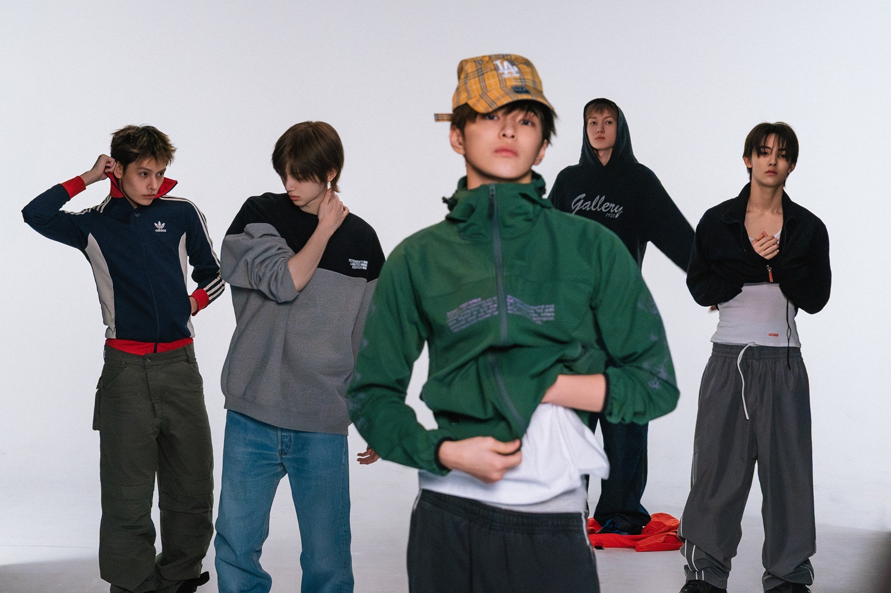

Nono
Warwood

01
À propos
Qui se cache derrière NonowarwoodSalut, moi c'est Nono. Je passe mon temps à créer : des edits et des vidéos que je monte pour YouTube et TikTok, des moodboards sur Pinterest, et des petits sites web comme celui que tu es en train de regarder.
Mon univers : la K-pop, la pop culture, les direction artistiques soignées — comme celle de cette page, inspirée des visuels d'albums que j'adore.
Cette vitrine rassemble tout ce que je fais au même endroit. Clique, regarde, abonne-toi si ça te plaît.
Fig. 01 — Moodboard · direction artistique
02
Edits & vidéos
Sélection — montés par mes soins01 — Blink!0:19 · 1:1
02 — My Boo0:22 · 4:3
03 — Final Ver.0:14 · 1:1
04 — Composition 10:16 · 1:1
03
Sites web
Petits projets — faits main
01
K-Shelf
App web · En ligne
Ma bibliothèque d'albums physiques, en virtuel — pour cataloguer sa collection
02
Japan Bingo
Mini-site · En ligne
Un bingo à cocher, édition spéciale Japon
03
RPG
Jeu · En ligne
Un petit jeu de rôle qui tourne dans le navigateur
04
TuneWave
2026 · Premier site
Mon tout premier site web — projet de techno de seconde
05
Et la suite sur GitHub
@Nonowarwood
Tous mes projets, y compris cette vitrine
04